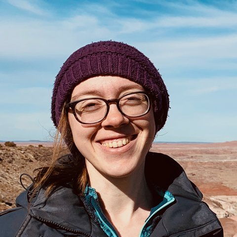
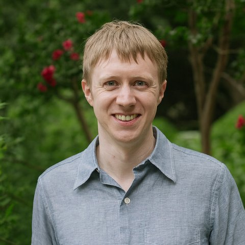
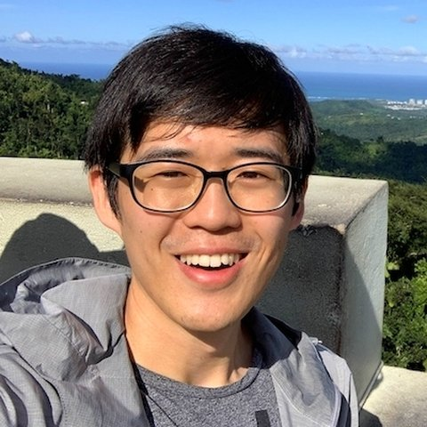
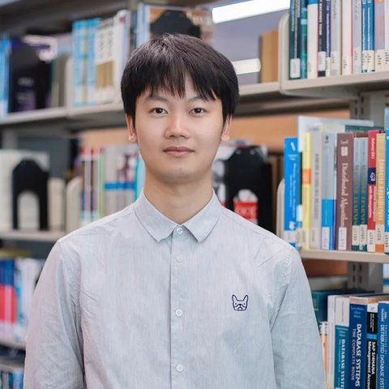

The First Workshop·AACL-IJCNLP 2026
Autonomous Research & Recursive Self‑Improvement
Co-located with AACL-IJCNLP 2026 in Hengqin, China, on November 9 or 10, 2026 (day to be fixed).
Abstract
AI agents are crossing a consequential threshold: from assisting with isolated research steps to running closed loops of literature search, hypothesis generation, coding, experimentation, evaluation, and revision. Autonomous research and recursive self-improvement may together form a direct path toward artificial superintelligence, turning a distant thought experiment into an urgent empirical and governance problem.
ARRSI asks when an agent can be trusted as a research scientist: can it generate genuinely novel hypotheses, test them against the world, learn from failure, and convert evidence from its own work into measurable improvements in subsequent research, updating prompts, memory, tools, workflows, training procedures, or parameters without sacrificing validity, reproducibility, safety, or human control?
- Venue
- AACL-IJCNLP 2026
- Location
- Hengqin, China
- Date
- Nov 9 or 10, 2026
- Format
- One day, in person
- Submissions
- OpenReview · double-blind
About the Workshop
Why nowThe question is no longer speculative. Research agents now synthesize literature, propose hypotheses that can be tested in laboratories, and run closed research loops: proposing an idea, implementing it, running an experiment, evaluating the result, and choosing the next attempt.
Self-improvement also reaches training: models generate practice data, rewards, curricula, and critiques through self-play, self-reward, and verifiable task generation, and agentic data systems improve the datasets they create. This broadens AI-for-AI to data curation, pretraining, midtraining, post-training, and systems optimization. Yet full recursive self-improvement remains unproven; evaluation must expose overfitting, hidden human labor, and reward tampering.
ARRSI fits AACL-IJCNLP because language is how research agents form hypotheses, retrieve multilingual evidence, call tools, critique claims, and explain results. The workshop brings together NLP, agentic systems, AI for Science, AI for AI, evaluation, and governance to establish definitions, benchmarks, reporting standards, and safety boundaries for systems that do not merely produce research-like text, but accumulate auditable evidence and use it to become better researchers.
Call for Papers
Empirical · theoretical · systems · dataset · benchmark · survey · positionWe invite empirical, theoretical, systems, dataset, benchmark, survey, and position papers on the following topics.
T1RSI for Harness & Loop Engineering
Prompts, context, memory, tools, workflows, evaluators, and harness code.
T2Autonomous Research
Literature synthesis, hypotheses, experiments, analysis, replication, peer review, and research taste.
T3AI for Science
Mathematics, physics, chemistry, biology, medicine, and materials science.
T4AI for AI
Models, agents, architectures, objectives, optimizers, kernels, compilers, training, inference, alignment, and evaluation.
T5Autonomous Data Engineering
Discovery, collection, cleaning, filtering, annotation, synthesis, provenance, and quality control.
T6Automated Training & Self-Training
Pretraining, midtraining, post-training, self-play, rewards, curricula, and continual learning.
T7RSI for Coding & General Agents
Coding and general agents, plus finance, healthcare, medicine, education, and other domains.
T8Infrastructure & Evaluation
Experiment managers, sandboxes, verifiers, provenance, checkpoints, rollback, compute accounting, benchmarks, and contamination control.
T9Safety & Governance
Validity, attribution, negative results, reward hacking, oversight, security, dual use, and human control.
| Important dates | |
|---|---|
| Call for papers released | TBA |
| Submission deadline | TBA |
| Notification of acceptance | TBA |
| Camera-ready papers due | TBA |
| Workshop day | Nov 9 or 10, 2026 |
Schedule
Provisional · one day · breaks follow the conference| Time | Session |
|---|---|
| 09:00 | Opening and invited talks |
| 11:00 | Contributed talks, posters, and demonstrations |
| 14:00 | Further contributed and invited talks |
| 16:00 | Evaluation and reproducibility clinic |
| 17:00 | Synthesis: vocabulary, checklist, and research agenda |
Invited Speakers
To be announced.
We are inviting speakers across harness engineering, scientific agents, AI for Science, and the measurement and governance of recursive self-improvement. Confirmed speakers will appear here.
Organizers
General & program chairs, proceedings, website, D&I, logisticsYuxuan Zhang↗
University of British Columbia · Vector Institute

Kelsey Allen↗
University of British Columbia · Vector Institute
Yixuan He↗
Arizona State University

Greg Durrett↗
New York University
Peter West↗
University of British Columbia
Yizhi Li↗
University of Manchester · IQuest Research, UbiQuant

Rui Meng↗
Google AI Research
Hanqi Yan↗
King’s College London
Hao Zhang↗
NVIDIA Research
Wenhu Chen↗
Meta Superintelligence Labs · University of Waterloo

Mingchen Zhuge↗
Recursive Superintelligence
Jian Yang↗
Beihang University · M-A-P
Xianglong Liu↗
Beihang University
Ming Zhou↗
Langboat
Dingmin Wang↗
Amazon AWS AI Lab
The organizing team spans North America, Europe, Asia, and the Middle East. Conflicted organizers take no part in assignments, discussion, or decisions.
Program Committee
Reviewing runs on OpenReview with double-blind submission, discussion, and decisions. We target at least 60 reviewers so that every submission receives three reviews while individual loads stay at three papers or fewer. The reviewer list will be published together with the call for papers. Reviewers assess evidence traceability, controls, reproducibility, resources, safety, and limitations; undisclosed AI-generated reviews are prohibited.
Submit Your Work
Submission opens on OpenReview together with the call for papers.
Long papers run up to 8 pages and short, position, or resource papers up to 4 pages, excluding references, in *ACL format. Every accepted paper presents a poster, and 4 to 6 receive talk slots. Watch this page or the GitHub organization for the announcement.